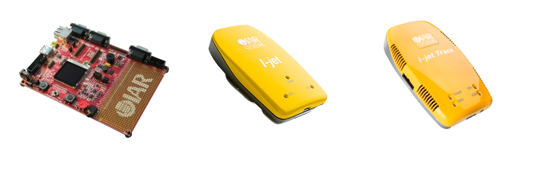

Hardware solutions
IAR Systems provide a range of starter kits and in-circuit debug probes to assist in your evaluation and design.

| Starter kits |
IAR Systems provides completely integrated starter kits for development of embedded applications. Each kit contains all the necessary hardware and software and allows you to design, start to develop, integrate and test your applications. |
| In-circuit debugging probes |
IAR Systems offers a range of in-circuit debugging probes, covering different needs from initial to more advanced development. The probes are completely integrated with IAR Embedded Workbench, and targeted for simplified, seamless and more flexible development workflows. |